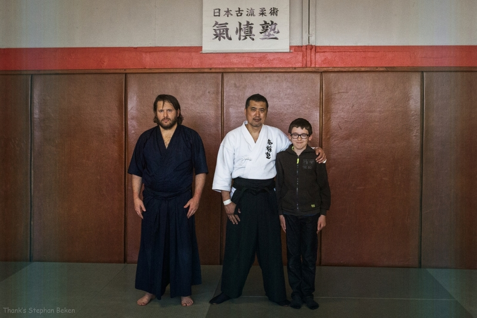

Biographie
Bruno pratiquant de Kyudo depuis 3 ans, dans le monde des Arts-martiaux depuis plus de 20 ans.
J'enseigne aux enfants ainsi qu'aux adultes le Iaido et l'Hakko-Ryu.
Le Kyudo est un très bon complément dans la pratique des Arts-Martiaux.
Il permet d'atteindre un niveau supérieur dans la concentration et la connaissance de soi.
Via ce blog je vais vous partager ma passion pour le Kyudo, mes questions, ma pratique, ma colère sur certaines pratiques.
J'espère que ce blog vous plaira.
Bonne balade et peut être à bientôt dans un Dojo.

| Année | Discipline | Grade |
|---|---|---|
| 2000 | Hakko-Ryu | Shodan |
| 2001 | Iaïdo | Shodan |
| 2004 | Iaïdo | Nidan |
| 2005 | Hakko-ryu | Nidan |
| 2009 | Sambo Défense | 1er degré |
| 2015 | Kyudo | début de pratique |